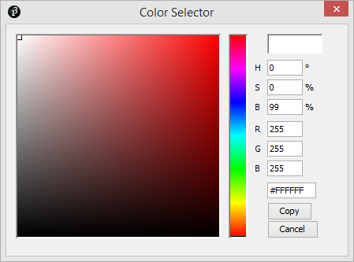
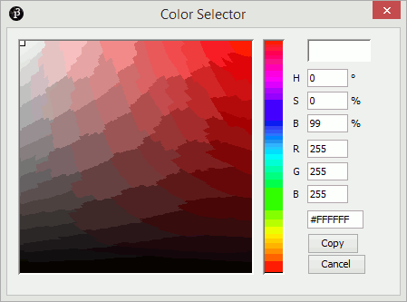

På skolen lærer man om farger og hvordan man kan blande dem for å få andre farger. Slik er det med farger i datamaskinen også; vi blander primærfarger og mengden av hver primærfarge bestemmer hvilken farge vi får. Hvis vi sammenligner blanding av malingsfarger med blanding av farger på en dataskjerm, fungerer blandingen litt annerledes. Hvordan blandingen fungerer på en dataskjerm skal du lære mer om i denne leksjonen med Processing.
Steg 1: Mer enn grått
Her skal vi se hvordan bakgrunnsfargen bestemmes. I det første punktet viser vi hele programmet, og i resten av punktene ser vi kun på draw som er den delen av koden som skal endres. For hvert steg kan du kjøre programmet med Ctrl + R, og hvis du vil, kan du lagre det med Ctrl + S.
Dette har du kanskje sett før. Når vi kaller på background med bare ett tall får vi en gråtone der 0 er sort og 255 er hvitt.
voiddraw() {
background(255, 0, 0);
}
Dette likner på det vi hadde i det første steget, men nå bruker vi plutselig tre tall istedenfor ett. La oss utforske dem.
voiddraw() {
background(0, 255, 0);
}
Når du kjører programmet, hvilken farge får du på bakgrunnen?
voiddraw() {
background(0, 0, 255);
}
Hvilken farge får du nå?
Forklaring av additive farger
Som nevnt har du kanskje lært om farger på skolen og brukt maling eller fargeblyanter. Du lærte nok om primærfargene rød, gul og blå, og at du kunne lage omtrent alle slags farger ved å blande disse sammen.
Jo flere farger man blander sammen når man maler, desto mørkere ble den ferdige fargen. Dette er fordi malingen inneholder fargede pigmenter som absorberer lys. Jo flere farger av lyset som absorberes, desto færre farger og mindre lys reflekteres og treffer øyet ditt. For eksempel absorberer grønn maling rødt og blått lys, det grønne lyset reflekteres tilbake og treffer øyet ditt. Gul maling absorberer blått lys, og blå maling absorberer rødt og deler av det grønne lyset. Da gjenstår det bare grønt lys igjen, og derfor kan du blande gul og blå for å få grønn.
I en datamaskin er det annerledes. Har du lagt merke til at skjermen lyser? Siden skjermen lyser, angir vi hvor mye hver farge skal lyse. Øyet reagerer på rødt, grønt og blått lys, så disse er valgt som de tre primærfargene i dataskjermer. Om du går nærme nok en gammel data- eller TV-skjerm kan du se de tre fargene hver for seg.
Hvilke tre farger fikk du i stegene ovenfor? Nå forstår du kanskje hvorfor de tre verdiene 255, 0, 0, 0, 255, 0 og 0, 0, 255 ga henholdsvis rød, grønn og blå?
Fordi primærfargene er rød, grønn og blå kalles dette systemet RGB. Det er et additivt system, fordi man legger sammen fargene, mens i tegning på papir jobber man med et subtraktivt system der farger trekkes fra.
Vi kan også blande farger her, men det oppfører seg annerledes fra du kanskje er vant til fra maling. Hvis vi blander rødt og grønt, får vi gult. Hvis vi blander grønt og blått, får vi en slags turkis, kalt cyan. Hvis vi blander rødt og blått, får vi en slags rosa, kalt magenta. Når alle tre fargene er like sterke, får vi en gråtone. Med alle tre på fullt, 255, får vi hvitt.
Du har kankje også sett et fargehjul før, der primærfargne plasseres rundt hjulet. Sekundærfargene, fargene man får når man blander to primærfarger plasseres da mellom disse. Vi kan også lage et slikt for RGB.
Steg 2: Fyllfarger og omriss
Når vi tegner former, er det en stor sjanse for at vi vil bruke andre farger enn svart og hvit. Foreløpig har vi bare sett at vi kan styre fargen på bakgrunnen, så la oss se hva vi kan gjøre med fargene til former.
Noen ganger kan det være tungvint å skulle lage fargene man har lyst på ved å bare tenke ut tallene. Man blir riktignok flinkere på dette etter hvert som man har gjort det en del ganger. Inntil man har blitt komfortabel med dette, kan det være lurt å bruke fargevelgeren som finnes i Processing.
Sjekkliste

Du får da opp et vindu som lar deg velge farger. Her kan du fylle inn tallverdiene som vi har sett tidligere, R, G og B. Det er også noen andre felt. H, S og B er for et annet fargesystem som naturlig nok heter HSB. Det er også to områder som vi kan velge farge fra ved å klikke. Øverst til høyre vises fargen som er valgt.
Hva skjer med verdiene til R, G og B for lyse farger? Hva er verdien til R, G og B for mørke farger?

Hva skjer med verdiene til RGB nå?
Når du limer inn, ser du at koden er på formen #0123EF. Dette er fargekoden som stod i det nederste tekstfeltet i fargevelgeren. Hvordan denne fargekoden fungerer er forklart i boksen under.
Web-farger - fargekoder i heksadesimaler
De som har jobbet med nettsider, er vant til å angi farger med en sekssifret kode: #0123EF. Du tenker kanskje: «Kan F være et siffer?» Ja, i heksadesimaler, eller sekstentallssystemet, utvides sifrene med bokstavene A-F. Da får vi sifre fra 0 til F, som er tallene fra null til femten. A er da 10, B er 11, C er 12, osv. Det er ingen forskjell på små og store bokstaver her, så man kan også skrive det som #0123EF.
Siden vi skal angi tre farger, RGB, består koden av tre tosifrede tall. I #0123EF er disse tre tosifrede tallene 01, 23 og EF. De første to angir rødt, de neste to grønt og de to siste blått.
Vi kan regne om #0123EF til rød, grønn og blå slik som dette:
rød = 0 · 16 + 1 = 1
grønn = 2 · 16 + 3 = 35
blå = 14 · 16 + 15 = 249
Altså nesten ingenting rødt, noe grønt og masse blått. La oss teste det ut:
Disse fargekodene kan være nyttige hvis man er kjent med de fra før. Fargekodene brukes stort sett kun direkte, og det er vanskelig å bruke heksadesimale fargekoder når fargen skal variere. For eksempel om du skal la programmet vise alle rød-farger, er det enklere å bruke vanlige heltall.
Men for program der du ikke ønsker å variere fargen underveis, kan de brukes med eksempelvis background. Senere skal vi se på hvordan vi kan lage color-variabler med disse kodene.
Steg 4: HSB
Da vi så på fargevelgeren, så vi tre tekstfelter merket H, S og B. Du så kanskje også hvordan disse oppførte seg når vi endret fargevalget? Hvis ikke, tar vi en rask titt på dette igjen under.
Dette systemet kalles HSB: Hue, Saturation, Brightness. Som på norsk er fargetone/kulør, fargemetning og lyshet/valør. Det første tallet, H, bestemmer hva slags farge det blir. Det andre, S, bestemmer hvor sterk fargen skal være. Det siste, B, bestemmer hvor lys fargen skal være.
Her kaller vi på en ny funksjon colorMode som tar imot fargesystemet som første argument og så maksverdier for de forskjelloge kanalene (H, S og B). Bare RGB og HSB kan brukes som fargesystem.
Du lurer kanskje på hvorfor H har fått 360 som maksverdi. Det er fordi fargetonen baseres på fargehjulet, og det gir 360 grader med fargetoner. Metning og lys gis typisk i prosent. Du kan selvfølgelig velge helt andre maksverdier om du ønsker det.
Her går vi gjennom fargetonene 60 grader ad gangen. Hvilke farger ligger på de seks vinklene: 0, 60, 120, 180, 240 og 300? Hva tror du befinner seg på 360 grader?
Om du lurer på regnestykkene for plasseringene av sirklene, så deler vi bredden på fire fordi det blir fire tomrom med tre kolonner. Tilsvarende blir det tre tomrom i høyden når vi har to rader. Ved å dele på antall tomrom, får vi bredden på avstanden mellom to nabosirkler eller vinduskanten og den nærmeste sirkelen.
float tone;
Så endrer vi draw til å tegne opp 9 sirkler der radene har samme metning, og kolonnene har samme lyshet:
I koden over, er det mye repetisjon av kode for å sette fargen og tegne opp sirklene. Selv om vi ikke skal gå gjennom løkker nå, kan det være nyttig å se hvordan denne koden kunne vært gjort kortere og enklere ved hjelp av løkker.
voiddraw() {
background(0);
int metning = 100;
int lyshet = 100;
tone = tone + 1;
if (tone > 360) {
tone = 0;
}
for (int rad = 1; rad <= 3; rad++) {
lyshet = 100;
for (int kolonne = 1; kolonne <= 3; kolonne++) {
lyshet = lyshet - 40;
fill(tone, metning, lyshet);
ellipse(kolonne * width / 4, rad * height / 4, 100, 100);
}
metning = metning - 40;
}
}
Steg 5: Fargevariabler og -funksjoner
Noen ganger er det nyttig å kunne ha variabler for å holde rede på farger. Over så vi at vi godt kan bruke tre variabler, en for hver fargekanal i systemet, men nå skal vi se på en egen type som kan brukes til farger: color.
Vi skal også se på noen funksjoner for å jobbe med farger. Dette gjør at vi kan få mer nytte av fargevariabler uten å bruke en variabel for hver fargekanal. Hvis farger skal endre seg veldig mye, kan det likevel være enklere med tre variabler. Variablene defineres, som tidligere, utenfor setup() og draw().
Hvis du kjører programmet ser du en blå sirkel på en grønn bakgrunn. color(32, 128, 64) gir oss en verdi som vi kan putte i en color-variabel. Nå vi bruker variabelen i background(bakgrunn), er det som om vi skrev background(32, 128, 64).
color svart = color(0, 0, 0);
Så setter vi omrisset til sirkelen til å være en mellomting mellom svart og fyllfargen:
lerpColor(farge1, farge2, blandingsForhold) gir en som ligger mellom farge1 og farge2, eller fyll og svart i koden ovenfor. blandingsForholdet er et tall mellom 0 og 1. Når det er 0 blir fargen helt lik farge1. Når det er 1 blir fargen helt lik farge2. 0.5 gir oss da en farge midt mellom de to.
Siden resultatet av et kall på lerpColor er en farge, kunne du også lagt resultatet i en color-variabel: color omriss = lerpColor(fyll, svart, 0.5);
Kjør programmet og merk at omrisset nå er en mørkere variant av blåfargen istedenfor helt svart.
Hva skjer med fargene om du lager dem før du bytter til HSB? Hva om du bytter til RGB, colorMode(RGB, 255);, etter at du har lagd fargene ovenfor?
Prøv selv
Forbedre denne siden
Funnet en feil? Kunne noe vært bedre? Hvis ja, vennligst gi oss tilbakemelding ved å lage en sak på Github eller fiks feilen selv om du kan. Vi er takknemlige for enhver tilbakemelding!
 Farger
Farger Sjekkliste
Sjekkliste